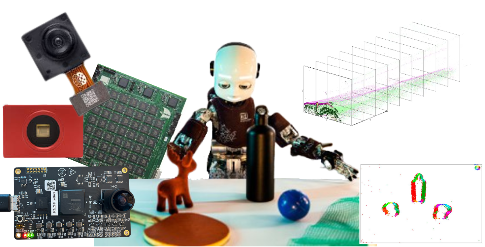
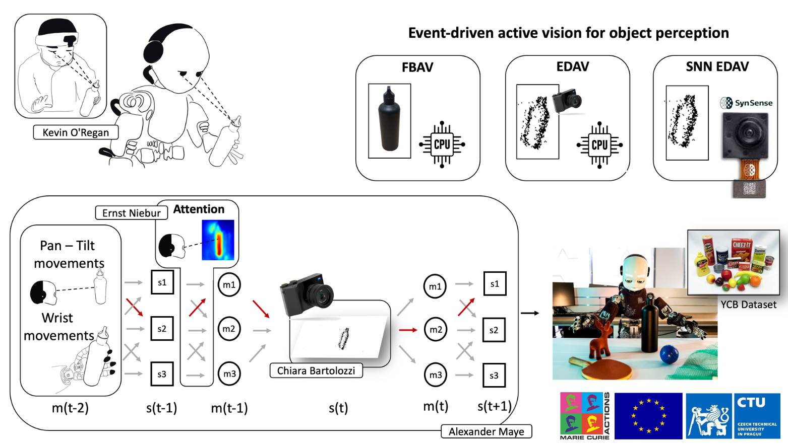

Vision is an exploratory behaviour that relies heavily on the dynamic relationship between actions and sensory feedback. For any agent, whether animal or robotic, processing visual sensory input efficiently is crucial for understanding and interacting with its environment. The key challenge lies in selectively filtering relevant information from the constant stream of complex sensory data. This process, known as selective attention, is also driven by the intricate interplay between bottom-up and top-down mechanisms, which together organize and interpret visual scenes. I explore how biologically plausible models for visual attention can enhance robotic interaction with the environment trying to understand the role of neuromorphic hardware in facilitating active vision and its limitations.